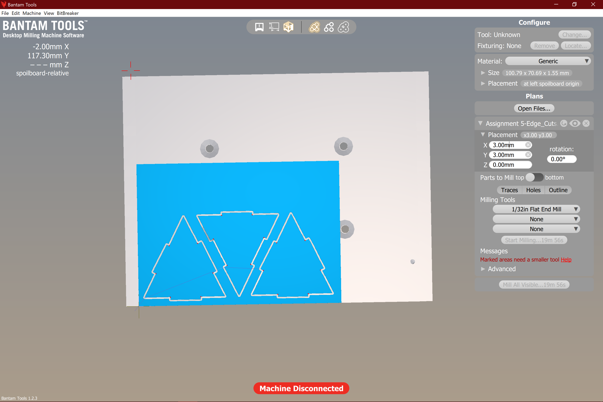

Assignment 5
For this assignment, I found the concept of the joining methods really daunting, before realizing that it was something that we had been working towards throughout the quarter.
I was struggling to conceptualize how to create a cube that would be joined only by their joints, but I realized that the concepts could apply to any 3D shape, and I started thinking about how to design 3D shapes in 2D, and looking up various nets (going back to like 3rd grade, I think that's what they're called). Once again, I turned to triangles (as my favorite shape), and could create a pyramid that would fulfill the requirements of the assignment, using something like a tongue and groove joint.
I originally planned on creating the shapes needed in OnShape, but I found it actually quite hard to create the simple outlines, so I decided to turn to Illustrator.
Using concepts we learned earlier in class, I measured the notches to match the thickness of the FR1, and created an "artboard" that was the size of the FR1 to determine what shapes I could fit on one piece.
I then created the designs of the square pyramid, creating one base piece, with inserts on each side where the base of the triangle sides would latch in, followed by 4 triangles, 2 of a "male" piece with a tab on the sides, and 2 of a "female" piece, that would have an inset where the tabs could fit in.
After making sure the tabs were the same sizes (15 mm), I exported them into .DXF file and prepared to move to the next step, KiCAD.
Here, is where I made a critical error. Repeatedly. For several hours.
When importing to KiCAD, I was not changing the graphic layer it was importing to into Edge.Cuts. I did not realize I had to make that change there, and simply imported my DXF files and then saved the project to a Gerber file, where in the output settings I selected Edge.Cuts only.
This simple import error would cause me much headache, as I would receive an error when trying to import the Gerber file into Bantam Tools

Major shoutout to Hannah N. for helping me realize my mistake and getting me importing my DXF's correctly, and the yellow color in KiCAD confirmed it!
After this, I had to take a pause in my designs as I did not have my FR1 at this point, nor was I able to mill
Once I was able to get to The Mill, to mill (nice), I had a pretty easy time getting everything set up in Bantam tools.

After many false starts, I figured out that TAPE is the big key for successful milling on the BantamBox.
Once I figured out how to properly use tape, I was in BUSINESS.


I did notice some weird behavior while milling, and I believe it is due to the inaccurate settings of my z placement in Bantam.

It also appears that I "double cut" my pieces due to that error in thickness setting, so that I ended up with way more pieces than I intended or needed!
Upon assembly, I found that some of my pieces did not "finish" milling correctly and had jagged edges or leftover bits. This, in combination with a lack of accounting for collision between pieces (all sides of the trinagle were the same, when in reality 2 of them should have had slightly shorter bases), meant the fit was not as snug as I would have preferred. All in all, I am pretty happy with the fact that I got any pieces at all!
Reflection
Once I got the stickiness down, I quite enjoyed watching the mill roll through the FR1 with ease, and I actually kind of found it theraputic in a way! Although my pieces didn't turn out the way I wanted them to, I definitely see the big difference between additive and subtractive fabrication, and the challenges that come with each!
Shout Outs:
Shout outs to: Hannah N for saving the rest of my hair, and Mill staff for bearing with me while being super frustrated
Source Files:
DXF (Triangle) File
DXF (Triangle 2)
DXF (Base)